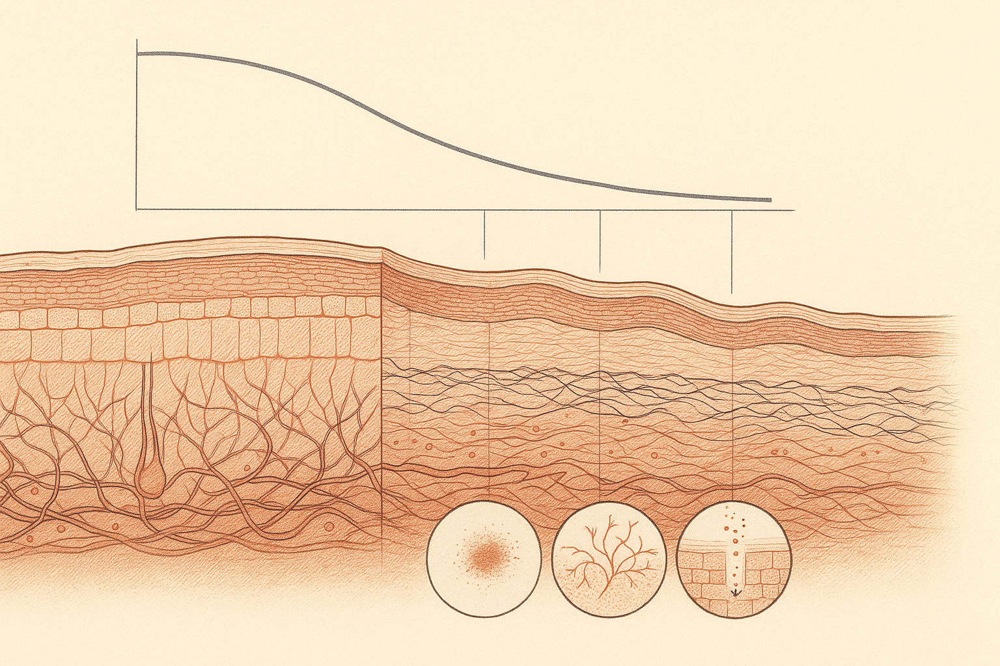
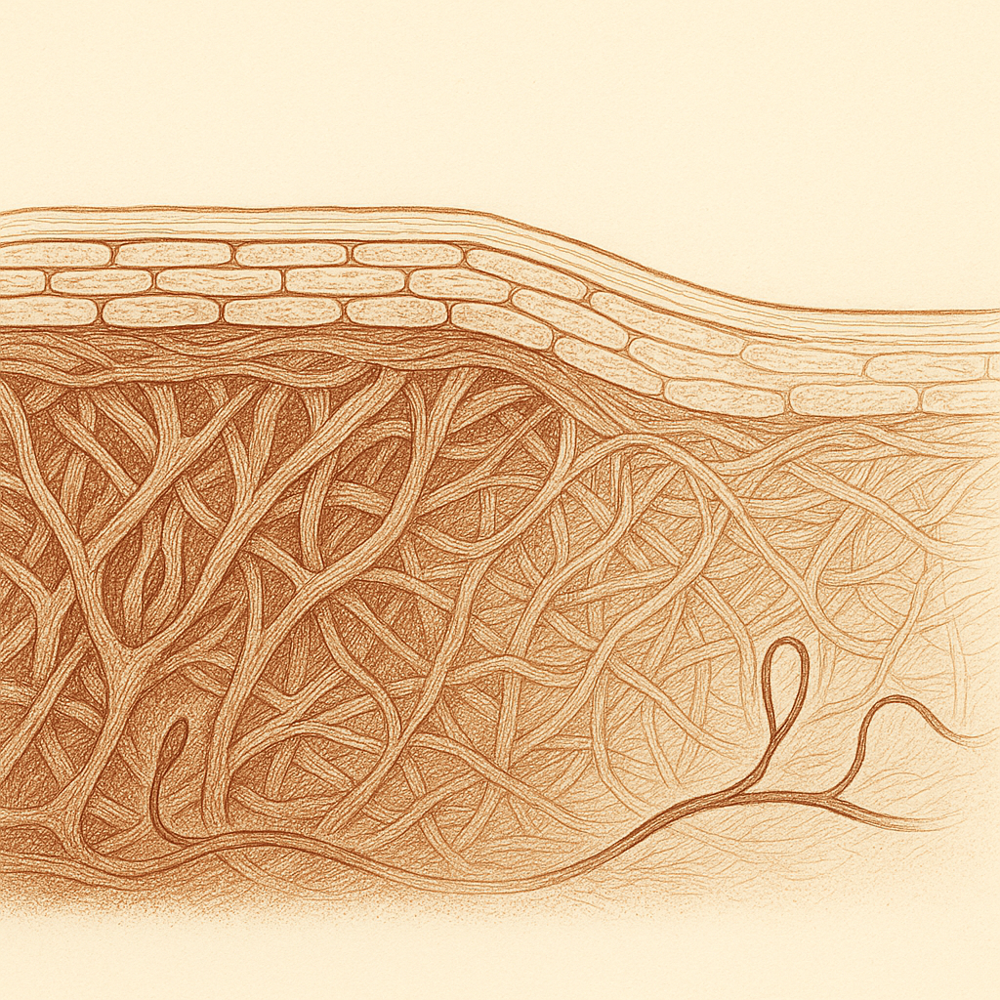
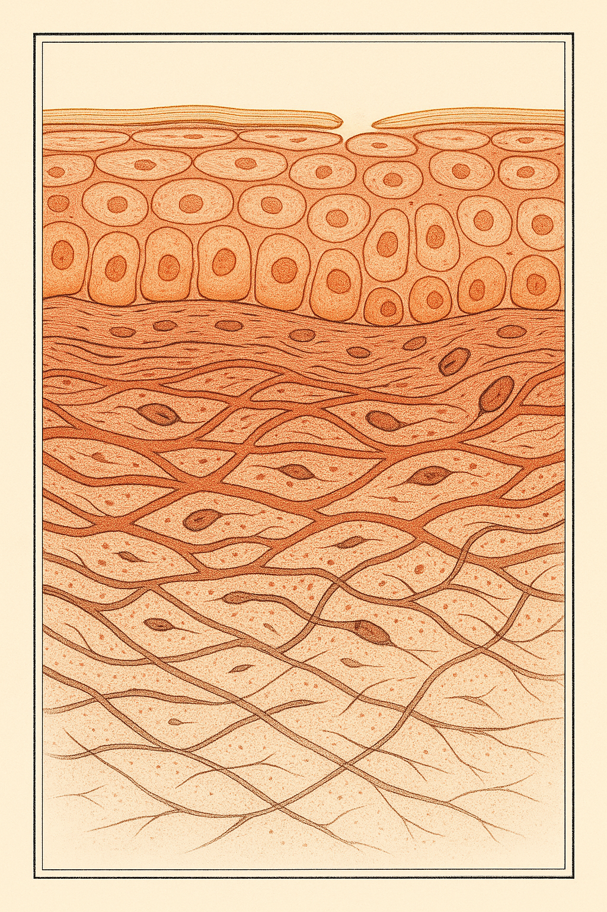

Review below. Reply approve to publish the Facebook post, or tell me edits.

Your skin is not just getting lines. It is getting thinner.
Somewhere in your forties, your skincare did not stop working. Your skin changed what it was made of.
That is a harder thing to notice than a wrinkle, because it does not announce itself. It shows up sideways, in a dozen small oddities you have probably registered and never connected.
> The reframe in three lines > > 1. Midlife skin is not just lining, it is losing density in the layer underneath. > 2. So the limit is no longer how strong your products are. It is how much irritation your skin will tolerate before you have to stop. > 3. The routine that wins is the gentle one you can actually run 300 days a year.
Foundation sitting in places it did not sit before, catching in fine creases around the mouth that were not there at 38.
Bruises on your forearms and shins that you cannot account for. No bump, no memory of one, just a mark.
Skin that flushes faster and settles slower. A hot shower, a glass of red, an argument, and the colour hangs around for twenty minutes instead of two.
A moisturiser that used to be plenty, and now feels like it evaporates by mid-morning.
Products that suddenly sting. The same vitamin C serum you have used for four years, now with a bite to it.
None of these are separate problems. They are one change, showing up in five places.
The term is dermal thickness, and alongside it, collagen density. The dermis is the load-bearing layer under the surface, the part that gives skin its springiness, its cushioning, and its ability to hold water. Its structure is largely collagen and elastin laid down by cells called fibroblasts.
That layer thins gradually across adult life. Research consistently associates a steeper decline with the menopausal transition, when oestrogen falls. The reason is not mysterious: oestrogen receptors sit in skin fibroblasts, which makes skin a genuinely hormone-responsive organ, not just a passive covering. (For the underlying science, see Thornton MJ, "The biological actions of estrogens on skin", Experimental Dermatology 11(6), 2002, which reviews oestrogen receptor expression in dermal fibroblasts and keratinocytes.) When the hormonal signal changes, the cells that maintain the scaffolding appear to slow down.
Think of a favourite linen shirt. It does not tear one day. The weave just gets looser with every wash, until light passes through it differently and it creases in places it never used to. The threads are still there. There are simply fewer of them per square centimetre, and they sit further apart.
That is the honest picture of midlife skin. It is not damage. It is not neglect, and it is certainly not a failure of discipline. It is normal biology, and it is happening to every woman you know.
But it does explain the list above. A looser weave bruises more easily, because small vessels sit closer to the surface with less cushioning around them. It holds water less well, so moisturiser does not last. It has less buffer between the outside world and the nerve endings, so things sting. It is not that your skin got fussy. It got thinner.
(If you want the companion piece, how photoageing differs from natural chronological ageing covers the other half of the story: sun exposure, and how differently it shows up.)
Here is where most of us go wrong, and it is an understandable mistake.
You notice the change. You conclude that what you were doing has stopped being enough. So you escalate. A stronger retinoid. A higher acid percentage. Peels every fortnight instead of every six weeks.
On skin with a looser weave, that often backfires. You get four good days, then redness, then flaking, then a fortnight off while the barrier recovers, then you start again from zero. Over a year, the aggressive routine may deliver fewer actual days of active skincare than the gentle one.
This is worth saying plainly. At this stage of life, the limiting factor is not potency. It is what your skin will let you keep doing.
Think of it as a tolerance budget. It is smaller than it was at 30. Every irritating thing you do spends from it. The skill is no longer finding the strongest product you can buy. It is assembling a routine you can actually run 300 days a year.
Ranked honestly, including the things we do not sell.
Daily SPF, first and by a distance. It does more for skin longevity than anything else on this list, this brand included. If you do one thing, do this one.
Barrier support. Ceramides, a plain unfussy moisturiser, and a cleanser that does not leave your face feeling squeaky. Thinner skin needs its buffer looked after, not stripped.
Sleep and protein. Not glamorous, and not a substitute for anything, but collagen is built from amino acids and most of that repair happens while you sleep. Worth mentioning without overclaiming.
Retinoids at a frequency you can sustain. Twice a week forever beats nightly for three weeks and then quitting.
Gentle daily modalities that ask nothing of your tolerance budget. Anything supportive that costs you no irritation is worth more now than it was at 30.
Light therapy does not restore dermal thickness, and it will not put the weave back. Nothing topical or at-home does. Anyone telling you otherwise is overselling what light can do.
What it does do is sit firmly in the "costs you nothing" column. Ten minutes. No acid, no peeling, no downtime, nothing that makes tomorrow's skin harder to work with. On a smaller tolerance budget, that matters more than it used to.
Honest timelines: many people report noticing glow and more even-looking tone somewhere in the first 7 to 10 days, and any softening in the appearance of fine lines around the 4 to 8 week mark. Individual results vary, and none of it is guaranteed. What it cannot do: fill a deep line, replace volume, or act as a treatment for any skin condition. It is a cosmetic device, not medicine. If you want to judge it for yourself, here is the full spec, limits included.
And we should say this plainly: Redermis is a new brand. We are still earning our reviews, and we are not going to borrow anyone else's in the meantime.
The goal at 45 was never the skin you had at 25. That skin was made of something you no longer have, and no serum returns it.
The goal is skin that stays comfortable, calm and resilient for the next thirty years. Skin longevity, not a war on wrinkles. That is a target you can actually hit, and gentleness plus consistency gets you there faster than force.

Your foundation is catching in places it did not catch two years ago. That is not the foundation.
Nobody warns you that in midlife your skin starts behaving differently, not just looking different.
Bruises on your forearms with no memory of a bump. Just a mark.
A moisturiser that was plenty at 38 and is not at 46.
Skin that goes red faster and takes a lot longer to calm down.
A serum you have used for years that suddenly stings.
Those are not separate problems. They are one structural change: through midlife the collagen scaffolding gets less dense and the whole thing gets thinner, and falling oestrogen appears to steepen that curve.
Think of a linen shirt. The weave loosens. It does not tear.
The usual reaction is to go harder. Stronger retinoid, higher percentage, more frequent exfoliation. On thinner, more reactive skin, that escalation usually costs more than it returns: you buy irritation, then have to stop for two weeks anyway. At this stage the limit is not how strong your products are. It is how much your skin will tolerate you doing consistently.
Plainly: light therapy does not thicken skin or rebuild that scaffolding. Daily SPF still does more than anything we sell. Its one real advantage here is that it costs you nothing in tolerance. Ten minutes, no sting, no peeling, nothing that makes tomorrow harder.
We are a new brand still earning our reviews, and we will not invent any.
Genuine question: which of those small changes did you notice first? The bruising one caught most of us off guard.
P.S. If you want a closer look at exactly what it is and what it is not, it is here: https://redermis.com.au/products/red-light-therapy-face-neck-mask
## Hashtags
#skinlongevity #midlifeskin #skincareover40 #redlighttherapy

Your skincare did not stop working. Your skin changed underneath it.
In your forties, skin does not just line. It thins.
A serum you have used for years that suddenly stings.
Redness that takes longer to settle.
Bruises you cannot account for.
Collagen density drops and the dermis gets measurably thinner through midlife, and falling oestrogen appears to steepen the curve.
A linen shirt does not tear. The weave just loosens.
So the instinct is to go stronger. Higher percentages, more acids, more often. On thinner skin that usually costs more than it returns.
The limit is not potency. It is what your skin will let you keep doing.
LED will not rebuild that scaffolding. Daily SPF still does more than anything we sell. What ten minutes of light buys you is a step that costs nothing in tolerance.
Skin longevity, not a war on wrinkles.
Which one did you notice first?
Full spec, limits included, via the link in bio.
## Hashtags
#skinlongevity #perimenopauseskin #midlifeskin #skinbarrier #skincareover40 #gentleskincare #redlighttherapy #ledmask #collagensupport
IMAGE PROMPT: Editorial science-illustration plate, 4:5 tall vertical, in the style of Scientific American and New Scientist textbook figures, on a bone-cream ground with a fine ruled border and generous margins. A histologically accurate vertical skin cross-section read top to bottom. Top: a thin stratum corneum of flattened overlapping corneocyte bricks bound by fine lipid mortar. Below it the living epidermis, two to four rows of nucleated keratinocytes, columnar at the base, flattening upward, sitting on a distinct wavy basement membrane. Below that the dermis occupying most of the frame, drawn as a woven felt of wavy interlacing collagen fibre bundles of varying thickness and orientation, with fine branching elastin fibres, several spindle-shaped fibroblasts with visible nuclei, and one or two looping capillaries. Crucially the collagen weave is DENSE, taut and closely packed immediately beneath the basement membrane and becomes progressively sparser, slacker, longer-spanned and lower in density toward the bottom of the frame, so the density gradient reads instantly. Absolutely no honeycomb, no hexagons, no regular geometric cells, no foam. Fine editorial ink line work, cross-hatching and stippling, hand-drawn archival print quality. Warm terracotta, ochre and clay on warm bone-white, one fine gold line tracing the uppermost skin surface. Entirely within frame. No product, no mask, no device, no technology, no people, no faces, no text, no letters, no numbers, no labels, no logos.
## Title
Why skin thins in your 40s, not just lines
## Description
Red light therapy for thinning skin, and what an LED face mask cannot do. Skin does not just line with age, it thins. The weave loosens like an old linen shirt, so thinner skin does not want stronger actives. It wants gentler, more consistent support. Light therapy will not rebuild that scaffolding, and daily SPF still does more than anything we sell. Its advantage: 10 quiet minutes with the Redermis mask costs your skin nothing in tolerance. New brand, still earning our reviews. Pin this.
## Hashtags
#RedLightTherapy #LEDFaceMask #SkinLongevity #MidlifeSkincare #CollagenSupport
## Image
Reuses the Instagram image (instagram.png). No separate Pinterest image is generated.